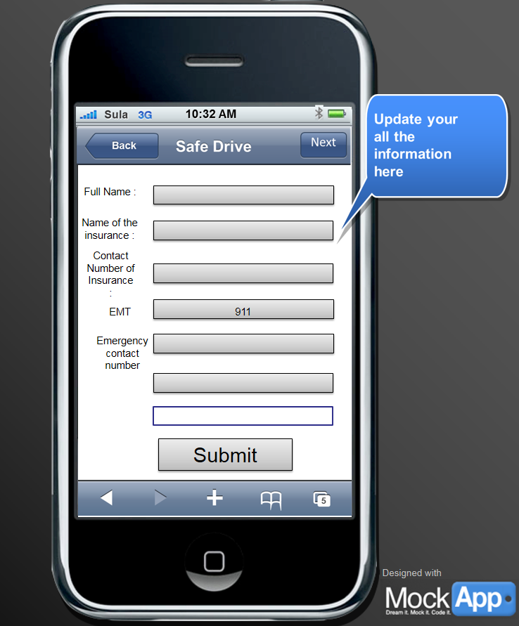

The Safe Drive app is an app that notifies emergency personnel when you are in trouble. It allows
you to record and upload videos, gives you a range of emergency levels to choose from, gives you GPS,
and provides you with traffic rules. Users may create an account that has their emergency contact
information.
This app is user-friendly and perfect for all drivers. If you would like to buy this app, "click here to register" to download it on your mobile phone.
Fig1. - Pictured is the icon for our app Safe Drive. It is a free app available in both the App Store and the Google Play Store.
Fig2. - Users must create credentials to login into their own account. For cars that have multiple drivers, it is best for each driver to have their own account.
In Safe Drive, there are 4 modules users can engage in:
Fig5. - Pictured is how Safe Drive allows you to upload dashboard videos of occurrences that you see fit of bad driving, bad parking, etc.
 Fig7. - In the Emergency Guide, your insurance company, local emergency services,you’re your emergency contact information are listed
Fig8. - In the event of an emergency, if you are physically able to, you may include a photo of the damage and send a ping to your emergency services listed, according to the urgency of the emergency